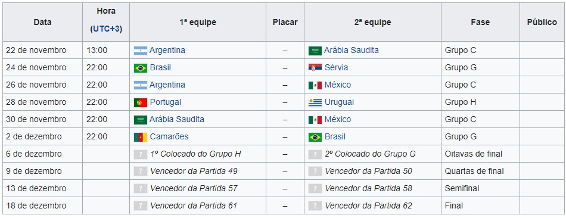
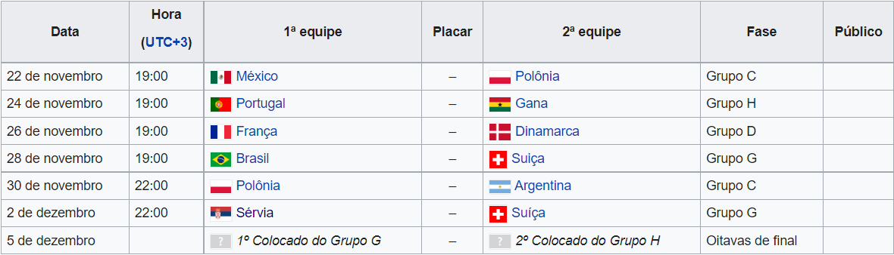
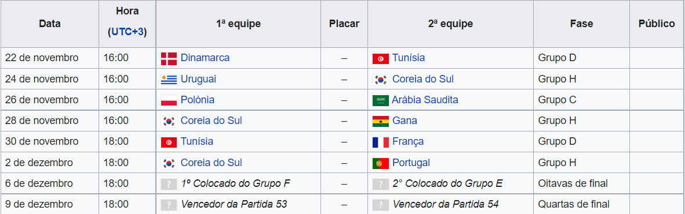
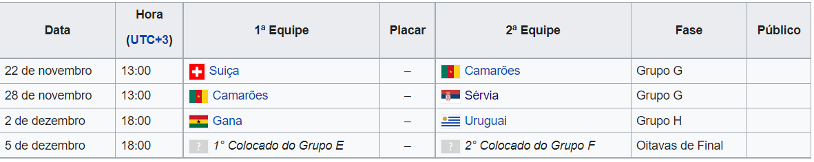

Copa do Mundo Fifa 2022
Catar, o país da copa
A Copa do Mundo FIFA 2022 ocorrerá no Catar de 21 de novembro de 2022 a 18 de dezembro de 2022.
O Catar é um emirado peninsular árabe cuja paisagem abrange um deserto árido e um longo litoral no Golfo Pérsico (Árabe) repleto de praias e dunas.
Sua população é de 2.545.603 habitantes, as sua principais atividades ecônomicas são o gás e o petróleo que deixaram o país com a segunda maior renda per capita do mundo.
A Copa do Mundo
A Copa do Mundo FIFA de 2022 ou Campeonato Mundial de Futebol FIFA de 2022 será a vigésima segunda edição deste evento esportivo. É a primeira realizada no Oriente Médio e a última a ter o formato de 32 equipes, já que a competição terá uma mudança no formato e número de equipes na edição de 2026, onde será sediado no Canadá, Estados Unidos e México, passando para 48 equipes.
A Copa do Mundo aconteceu pela primeira vez em 1930, no Uruguai. As edições de 1942 e 1946 foram canceladas pela Fifa por conta da Segunda Guerra Mundial. Com o avançar dos anos, a Copa do Mundo transformou-se em uma competição de importância mundial e de grande audiência
A seleções participantes
Grupo G
Grupo H
Os Estádios da Copa
Estádio Nacional de Lusail
Localização: Norte de Doha.
Capacidade: 86.000 mil torcedores
Ano de inalguração: 22 de novembro de 2021

Estádio 974
Localização: Doha.
Capacidade: 40.000 mil torcedores
Ano de inalguração: 30 de novembro de 2021

Estádio Estadio da Cidade da Educação
Localização:Doha.
Capacidade:45.000 mil torcedores
Ano de inalguração: 15 de Junho de 2020

Estádio Estádio Al Janoub
Localização: Al-Wakrah
Capacidade: 40.000 mil torcedores
Ano de inalguração: 16 Maio de 2019
